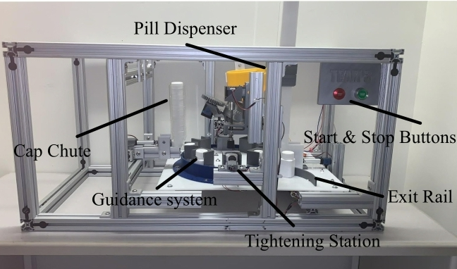
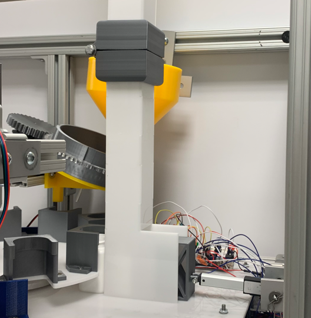
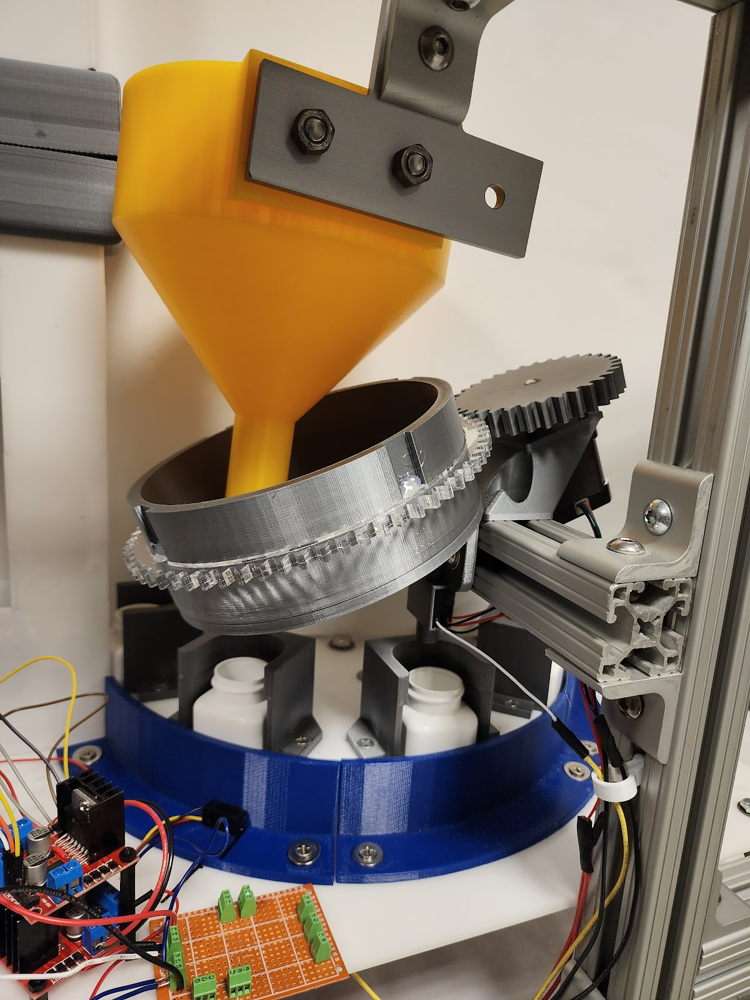
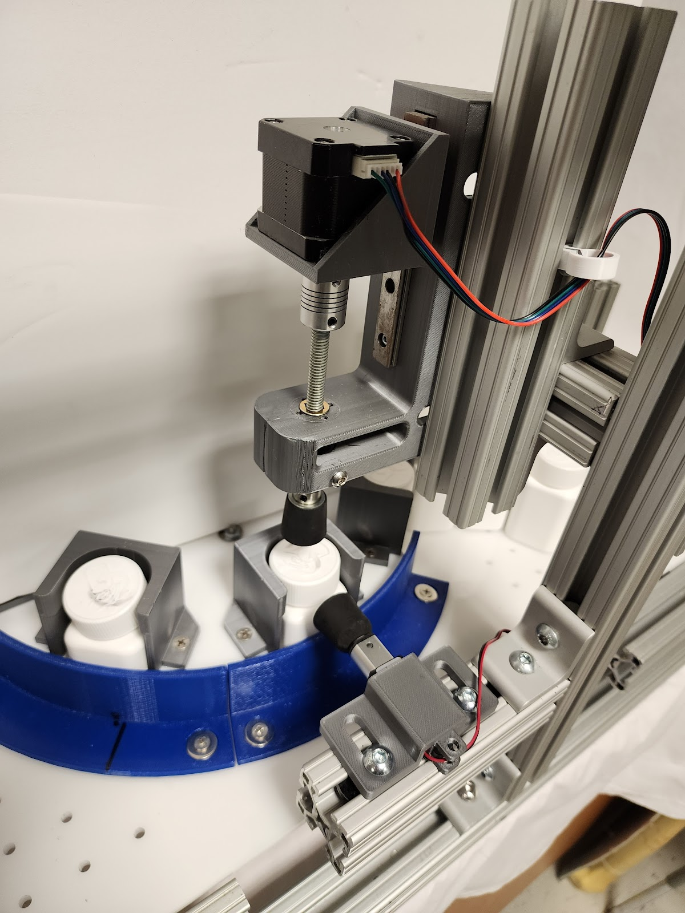

Sparky the Firefighter
Restoring a vintage animatronic dog to help support local firehouse
Learn moreThis is where all my projects are stored, feel free to message me about anything on this page
Projects serve as the crucible within which theoretical knowledge is tempered by practical experience, a fundamental component in the maturation of any engineer. They act as tangible demonstrations of our ability to navigate the complexities of design, problem-solving, and innovation. Each project, whether it culminates in success or offers valuable lessons from its shortcomings, contributes significantly to our professional growth. They allow us to manifest our ideas into physical realities, offering a canvas to showcase our skills, creativity, and adaptability to challenges. Moreover, projects encourage collaborative teamwork, resilience in the face of unexpected obstacles, and the continual application of emerging technologies. In essence, they are not just milestones of learning but also stepping stones towards the pinnacle of engineering expertise.
Restoring a vintage animatronic dog to help support local firehouse
Learn more
In the heart of my senior year at the University of Delaware, as a mechanical engineering student with a passion for aerospace, I've taken on an invigorating challenge: resurrecting the Indian River Fire Company's animatronic dog and firetruck. This project is not just a repair job; it's a revival of a community icon that has been silent for too long.
The task at hand is complex. We're dissecting and reworking a system that's a blend of early '90s technology and layers of modifications. This animatronic firetruck, with its myriad of features like a differential drive, actuated movements, and a remote audio system, is a puzzle of engineering marvels. But it's a puzzle I am actively solving.
Currently, I'm deep in the trenches of this project, wrestling with tangled wires and outdated components. The key challenge? Upgrading the obsolete 75MHz transmission system to a more reliable 2.4GHz transmitter, ensuring longevity and efficiency. Simultaneously, I'm troubleshooting and replacing the central electronic controller, the heart of this animatronic machine.
This undertaking is more than a university project; it's a commitment to reviving a vital tool for community engagement and fire safety education. Every step in this process is a learning opportunity, aligning perfectly with my interests in engineering and problem-solving. As I progress, I'm not just applying theoretical knowledge from my coursework; I'm gaining invaluable hands-on experience that's shaping my future as an engineer.
I'm dedicated to seeing this project through to the end, ensuring that the Indian River Fire Company's animatronic mascot returns to its role as a beloved and functional part of their community outreach. Stay tuned for more updates as I continue this challenging yet rewarding journey.
Creating an airplane to compete in ASAE Competition, with smaller glider attachment.
Learn more

Creating machine that holds, fills, and caps pill bottles.
Learn more
In this detailed portfolio project, I will guide you through the development of a compact pill bottling machine designed for small-batch vitamin and supplement manufacturers. This project was to design, manufacture, and test a compact, automated pill bottle filling system for small batch manufacturers that includes conveyance, pill filling, and capping operations.
The sponsors for this project are two regional manufacturing firms, Norwalt Design (Randolph, NJ) and Omega Design (Exton, PA). The sponsors for this project have tasked the team to develop a compact frame pill bottle filling station to extend their product lines. The target end user for this system will be small-batch vitamin and supplement manufacturers that only require the packaging of their products. One of the constraints that were provided by the sponsors was the frame. The frame needed to be 20”X20”X40” and constructed out of 80-20 aluminum extrusion. This constraint was put in place with the target consumer in mind. Keeping the size on the smaller size allows the small batch vitamin and supplement companies to have more options with set up and has minimal effect on their existing infrastructure. The use of the 80-20 extrusion also has excellent benefits. It is a sturdy base for the structure and allows more extrusion or custom parts to be mounted anywhere along the extrusion. This is very helpful when going through the prototyping phase since it permits certain dimensions to not be as critical and then allows the team to optimize reliability.

When touring Norwalt and Omega concepts were learned like the Vacuum suction cups that would allow for easy grabbing of objects such as a pill bottle cap. Another interesting mechanism was the rotary gear wheel which would be effective for moving around pill bottles. After doing general benchmarking for ideas at Norwalt and Omega the team started searching the internet for specific ideas for each component of the system. The team found that conveyor belts and rotary tables were the best way to transport pill bottles from each machine to the next. Different types of motors, sensors, and hardware parts were explored to come up with the most efficient machines. The bottle dispensing machine was based on using gravity to drop each bottle down after a motor pushed it onto a conveyor belt. A very popular method for pill dispensaries was a rotating funnel that would accurately drop pills into a bottle. For capping, the team explored using a lead screw to tighten the caps onto the bottles. To improve these prototypes the team will order every part that is currently needed along with motors and sensors. The different components will then be made out of metal and tested to make sure they’re exactly what is needed. Overall, the team has gathered a lot of information and concepts from Norwalt, Omega, and online and has compiled it to create the best prototypes possible.
The 3 most prominent concepts that were taken into consideration were divided into three categories; Bottle dispensing, Bottle filling, and Bottle Capping.
Concept #1: Crank-Rocker Push Platform
This preliminary concept has a strong emphasis on conveyance. The Crank-Rocker Push Platform starts with a crank-rocker 4 bar linkage mechanism (which will satisfy the Grashof condition) connected to a motor rotating clockwise. There is a “push platform” connected to the rocker which can be grounded somewhere. Pill bottles will be suspended initially in a vertical transparent box, where gravity pushes them down - a bottom cover can be installed which opens upon the start of the machine to prevent downward motion initially. Pill bottles will slide down a ramp and onto a platform, where they are then bound between the ramp and the vertical wall attached to the other end of the platform. Each full rotation of the crank will cause the rocker (and thus the Push Platform) to make contact with a pill bottle on the platform, which will then push the bottle onto the conveyor belt. Two “rods” can be placed on each side of the conveyor belt-shaped so that they get closer together as they move down the conveyor belt - to help align the pill bottles before transitioning to the next part of the machine.

Concept #2: Rotary Pill Dispenser
This concept is designed for bottle filling. This design consists of a hopper that contains the pills. The hopper is mounted at an angle and has holes along the edge that are large enough for one pill to fit in. There is a shoot under the hopper that lines up with the holes, when a pill is in the hole it falls down the shoot and into either a pill bottle or holding area before being bottled. In the shoot, there will either be an infrared (IR) sensor or an ultrasonic sensor that will count the pills passing so the same amount will always be packaged.

Concept #7: Linear Capper
This preliminary concept focuses on bottle capping. This system requires the caps to be dropped and positioned onto the bottles and the system above screws the caps onto the filled pill bottles. The device that is responsible for making contact with the caps and screwing it into place is a circular piece of rubber that is connected to a motor that is connected to a platform on a lead screw. The lead screw puts a downward force onto the bottle caps when the motor with the rubber screws the caps on. After the cap is attached to the bottle, the lead screw brings up the entire capping mechanism to allow the filled/capped bottle to pass through and let the next empty bottle enter into position for the process to occur again.

The current product of the system is shown below. Starting in the back left, the pill bottles are loaded into the bottle chute and individually pushed out by a linear actuator onto the rotary table. Here the bottles go through 3 different stages along the rotary table in 90-degree increments moving at a pace of 45 degrees. First, the bottles go through a pill-filling dispenser that deposits 30 + 1 pill into each bottle using a chute/funnel mechanism with a gear. Then the bottles proceed to the cap dispenser, where another linear actuator pushes a cap onto the bottles, using a bottle guide to keep the cap placed directly on the bottle. Finally, the bottles are rotated under a capping system that uses a linear actuator to apply pressure to the caps. Along with the mechanical components is an Arduino button board, ABB for short, which manually allows for 2 directional movements of each mechanical part. Additionally, there is an e-stop on the breadboard that restarts all systems and stops them in place.

The initial bottle dispensing and conveyance system consisted of a crank-rocker mechanism as well as a conveyor belt. A motor would rotate a crank arm which would move a pusher to translate the bottles onto a conveyor belt. The conveyor belt would then carry the bottles to the rotary table. This first prototype underwent two important changes for the final design. The first is the replacement of the original crank-rocker mechanism that would push the bottles out and dispense them. Instead, a simpler linear actuator will be used to push the bottles out of the chute. This would take up less space and be more efficient. The second change to the original design was the elimination of the conveyor belt between the bottle dispenser and the rotary table. By removing the intermediate step of the conveyor belt, the team simplified the design and improved its reliability. The conveyor belt was able to be removed because it essentially served no purpose since the bottles could be dispensed directly into the rotary table. This not only removed the uncertainty of bottles falling on the belt but also made the system more compact and space efficient. Additional beam break sensors were added to the rotary table to allow the bottles to spin to the exact location needed.

The pill dispensing system has stayed relatively similar to the initial concept but does have some critical improvements. The first of which is the wall height of the spinning part of the dispenser. The initial prototype had a wall high of 1⁄2 inch, when doing a general function test the team noticed a limit on the number of pills that can be placed before they overflow. Increasing the wall height improved the situation but didn’t solve it completely as the team noticed on the second prototype, that the number of pills needed for all the bottles exceeded the limit of pills that could be preloaded without affecting the function. On the third prototype, a funnel was added just above the dispenser. This lets all the needed pills plus extras be loaded into it but only lets more pills be added up to a certain point that still allows for proper function. On the fourth prototype, a NEMA 17 motor was added on the same angled plane as the dispenser. A gear was then designed to slide over the side of the dispenser to interface with a gear on the motor. The gear ratio is 2:1, which means the motor can rotate exactly 4 times to dispense the required 30 pills per bottle. To ensure exactly 30 pills are dispensed, a break beam sensor was added in the shoot so that the pills fall through before landing in the bottle. The system's code keeps track of every time a pill breaks the sensor beam. Once 30 pills are reached, the pill dispenser stops spinning and allows the rotary table to move the bottle to the next station once the other subsystems have finished their processes.

The cap dispensing and capping system has been consistent throughout the initial prototyping stages up until its current state, consisting of a lead screw that will be motorized pushing caps onto the filled bottles. The design has come a long way with some needed improvements after testing physical prototypes though. Starting with a need for guide rails around the bottle, shown below in Figure 5. With the bottles sitting in the rotary table there was play with the orientation of the bottle caps and the capper would sometimes jam or have errors. To correct this, 3D-printed guides were fastened along the rotary table to restrict the movement of the caps. Additionally, the rotary table grooves were expanded to allow some movement of the bottles. Originally, the rubber plunger had a chance to unscrew the bottle caps as it was being raised due to normal force and restricted movement of the bottles, to fix this, the slots in the rotary table were widened and a second linear actuator was used to push the cap against the cap guide to counteract the frictional force from the lead screw’s gripper while it was moving up to it’s ready position.

A large emphasis was placed on how smooth each bottle transitioned from the bottle dispenser to the rotary table upon contact with the linear actuator. 10 trial runs (120 total empty bottles) were conducted with members of the team paying close attention to the transition state and its success or failure. Success was declared if an individual bottle was able to slide into an open slot on the rotary table without any issues, or without any human interference. Success was also declared if each bottle fell without interfering with the bottle below it from the 3D printed linear actuator bottle block.
10 trial runs (120 total empty bottles) were tested with success being declared so long as a bottle was filled with a total of 30 pills - no more, and no less. Members of the team paid close attention to the transition from the pill funnel and through the pill base, along with drop through the base, into the empty bottle for each pill. Close attention was also focused on the sensor’s ability to stop the system at proper times, when expected (i.e., when an empty bottle entered the right position directly underneath the pill base where break-beam sensors were placed.
10 trial runs (120 total caps) were tested with success being declared so long as a cap was fully tightened upon contact with the lead screw mechanism and the linear actuator rotational stopper. Members of the team paid close attention to whether the cap orientation from cap dispensing led to any tightening issues, and whether the linear actuator was able to successfully hold the cap as the lead screw reversed its direction in preparation for the next bottle.
Upon examination and extensive testing, two modes of failure showed worry. One rather likely place of failure is the pill dispensing mechanism. The Pill Funnel, a potential location of the failure, is susceptible to grinding over time, which can lead to a fracture in the rotation cylinder. This grinding can occur due to friction between the pills and the funnel's surfaces during the dispensing process. To address this issue, a possible solution is to introduce a lubrication system that reduces friction and wear on the surfaces. Additionally, optimizing the geometry of the funnel and selecting appropriate materials with enhanced durability can help mitigate the grinding and prolong the lifespan of the rotation cylinder. Furthermore, the pill dispensing mechanism can benefit from additional improvements. It would be beneficial to incorporate a feedback system that detects and rectifies any errors during the dispensing process. This can involve incorporating a feedback loop that cross-verifies the dispensing count with the number of pills that made it into the bottle, allowing for adjustments and ensuring accurate pill delivery.

In the case of the Bottle Cap Tightener, a common failure mode observed is cracking on the tightening mechanism due to torsion. This occurs when the twisting force applied to the caps exceeds the material's capacity to withstand it, leading to structural failures. To mitigate this problem, a redesign of the tightening mechanism may be necessary to distribute the torsional forces more effectively. Alternatively, considering alternative materials with higher torsional strength can enhance the overall robustness of the mechanism. Additionally, implementing a torque-limiting mechanism or incorporating sensors to monitor the torque applied during the tightening process can prevent excessive stress and potential cracking. Currently, to address this failure, a plastic weld was used to put the part back together, and has been holding throughout this fix. Due to the time constraints of the project, another iteration may be 3D printed with a denser infill to strengthen the device but a complete material swap would be ideal for permanent use.

By addressing these failure points and implementing the proposed solutions, the pill dispensing system can achieve higher reliability and accuracy in pill counting and bottle capping processes. Careful consideration of material selection, geometry optimization, lubrication systems, and feedback mechanisms will contribute to the development of a more efficient and dependable final design.
- 99% success rate, 10 trial runs (120 bottles tested)
Bottle Dispensing Details:
A 1% failure rate implies that roughly 1 bottle (really 1.2 bottles with 1% calculation) failed in the systems analysis. Members of the team decided that this error was due to how the bottles were loaded vertically in the bottle dispenser, as this had a very high success rate. Therefore, overall, this was deemed a successful subsystem.
- 97% Chance of getting 30 pills per bottle, 10 trial runs
- 3% Chance on +1 pill in a bottle
Pill Dispensing Details:
A 3% chance implies that roughly 108 extra pills total were added to all 10 trial runs in its entirety (out of a total of 3600 total pills from all trial runs). There were no issues with missing pills, and it is much more preferred to have a +1 error rather than a -1 error. It was concluded from members of the team that this +1 error is mainly due to how the pill base is oriented and how the pills are inserted into the funnel as the system begins, as there are times where one pill was able to sneak in if the pill counter was oriented in just the right position to allow for this to occur. Overall, a 3% error was more successful than not as a result of analysis
- Orientation of cap insertion created difficulties, 80% success rate, 10 trial runs, possible jamming of caps in vertical stacking orientation from lip
- To avoid this in the future, each bottle cap guide should have sharper shoulder fillets and should be trimmed down to prevent contact.
- 80% success rate, this is a result of Cap Dispensing. If the cap is not placed on properly then the capper has a difficult time spinning the cap. This is a direct result of the cap dispensing analysis and error from the cap dispensing analysis.
The scope of this project is to design, manufacture, and test a compact, automated pill bottle-filling system for small batch manufacturers that includes conveyance, pill filling, and capping operations. After testing and evaluating the final design (Figure 2), everything in the scope is completely fulfilled. The conveyance is satisfied by the rotary table that drives the whole assembly line. The pill-filling category is made up of two stages which include the pill bottle hopper and the rotary pill dispenser. The capping operation is composed of the cap pusher and the linear capper. All of these mechanisms are controlled by an Arduino mega with safety features built in, like an emergency stop button. Every main component of the design fits easily into the 20”x20”x 40” 80-20 frame. The $500 limit on outside parts was a constraint that was fulfilled by only spending $428.00. Every prototype in the pill-filling category has a 100% reliability factor; however, the cap dispensing mechanism is having a bit of trouble in this field with a cap getting jammed in 1 out of 50 attempts . The linear capper also has a 100% reliability factor depending on the cap dispensing mechanism dispensing the caps properly. Overall, the design satisfies every part of the original scope along with all of the metrics and constraints.


A bike designed by sophomore me, fully created out of wood and hardware.
Learn more
Designing a PID controller for a remote control car, maining proper speed as it navigates a scaled city.
Learn more
An assortment of intricate movie props, such as rings, staffs, swords, and a guitar.
Learn more
Designing a machined steel fracture plated similar to surgical designed femur plates.
Learn more
Various programs coded by me, involing excel, phyton, html, css, and matlab.
Learn moreBlank blank as blank blank blank within blank theoretical blank is tempered by practical blank, a fundamental blank in the blank of any blank. They act as tangible blanks of our ability to navigate the complexities of blank, blank-solving, and blank. Each blank, whether it blanks in success or offers valuable blanks from its blanks, contributes significantly to our professional blank. They allow us to blank our ideas into physical blanks, offering a blank to showcase our blanks, creativity, and adaptability to blanks. Moreover, blanks encourage collaborative blank, resilience in the face of unexpected blanks, and the continual application of emerging blanks. In blank, they are not just blanks of learning but also stepping blanks towards the pinnacle of engineering blank.
Blank blank as blank blank blank within blank theoretical blank is tempered by practical blank, a fundamental blank in the blank of any blank. They act as tangible blanks of our ability to navigate the complexities of blank, blank-solving, and blank. Each blank, whether it blanks in success or offers valuable blanks from its blanks, contributes significantly to our professional blank. They allow us to blank our ideas into physical blanks, offering a blank to showcase our blanks, creativity, and adaptability to blanks. Moreover, blanks encourage collaborative blank, resilience in the face of unexpected blanks, and the continual application of emerging blanks. In blank, they are not just blanks of learning but also stepping blanks towards the pinnacle of engineering blank.
Blank blank as blank blank blank within blank theoretical blank is tempered by practical blank, a fundamental blank in the blank of any blank. They act as tangible blanks of our ability to navigate the complexities of blank, blank-solving, and blank. Each blank, whether it blanks in success or offers valuable blanks from its blanks, contributes significantly to our professional blank. They allow us to blank our ideas into physical blanks, offering a blank to showcase our blanks, creativity, and adaptability to blanks. Moreover, blanks encourage collaborative blank, resilience in the face of unexpected blanks, and the continual application of emerging blanks. In blank, they are not just blanks of learning but also stepping blanks towards the pinnacle of engineering blank.
Blank blank as blank blank blank within blank theoretical blank is tempered by practical blank, a fundamental blank in the blank of any blank. They act as tangible blanks of our ability to navigate the complexities of blank, blank-solving, and blank. Each blank, whether it blanks in success or offers valuable blanks from its blanks, contributes significantly to our professional blank. They allow us to blank our ideas into physical blanks, offering a blank to showcase our blanks, creativity, and adaptability to blanks. Moreover, blanks encourage collaborative blank, resilience in the face of unexpected blanks, and the continual application of emerging blanks. In blank, they are not just blanks of learning but also stepping blanks towards the pinnacle of engineering blank.
Blank blank as blank blank blank within blank theoretical blank is tempered by practical blank, a fundamental blank in the blank of any blank. They act as tangible blanks of our ability to navigate the complexities of blank, blank-solving, and blank. Each blank, whether it blanks in success or offers valuable blanks from its blanks, contributes significantly to our professional blank. They allow us to blank our ideas into physical blanks, offering a blank to showcase our blanks, creativity, and adaptability to blanks. Moreover, blanks encourage collaborative blank, resilience in the face of unexpected blanks, and the continual application of emerging blanks. In blank, they are not just blanks of learning but also stepping blanks towards the pinnacle of engineering blank.